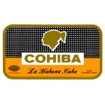
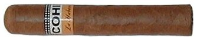
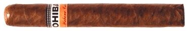
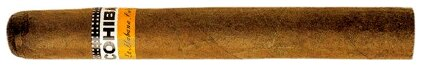
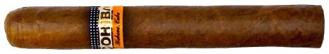
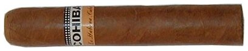
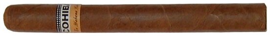
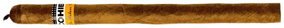

Cohiba
Est. 1966 · El LaguitoThe flagship of Cuba. It was first rolled for diplomatic gifts, and became the cigar most people mean when they say “a Cuban.” Rich and refined, made from the most selected leaf.
Strength: Medium to full
Cigars we often have
- Siglo I

Cohiba Siglo I - Siglo II

Cohiba Siglo II - Siglo IV

Cohiba Siglo IV - Siglo VI

Cohiba Siglo VI - Robustos

Cohiba Robustos - Esplendidos

Cohiba Esplendidos - Lanceros

Cohiba Lanceros